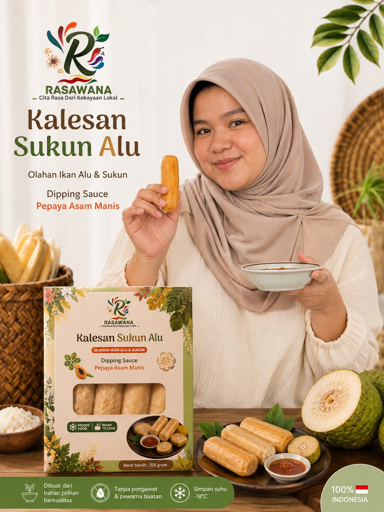
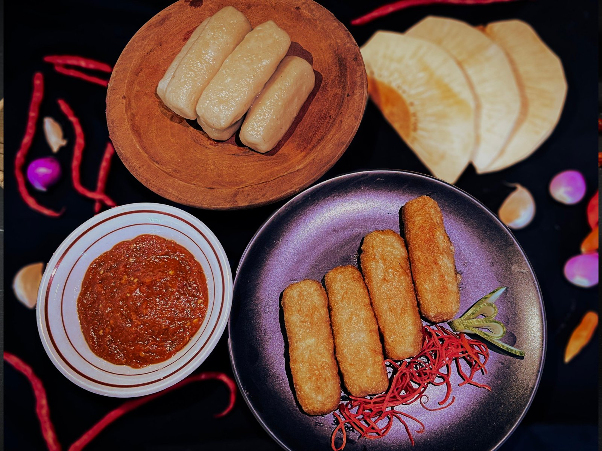
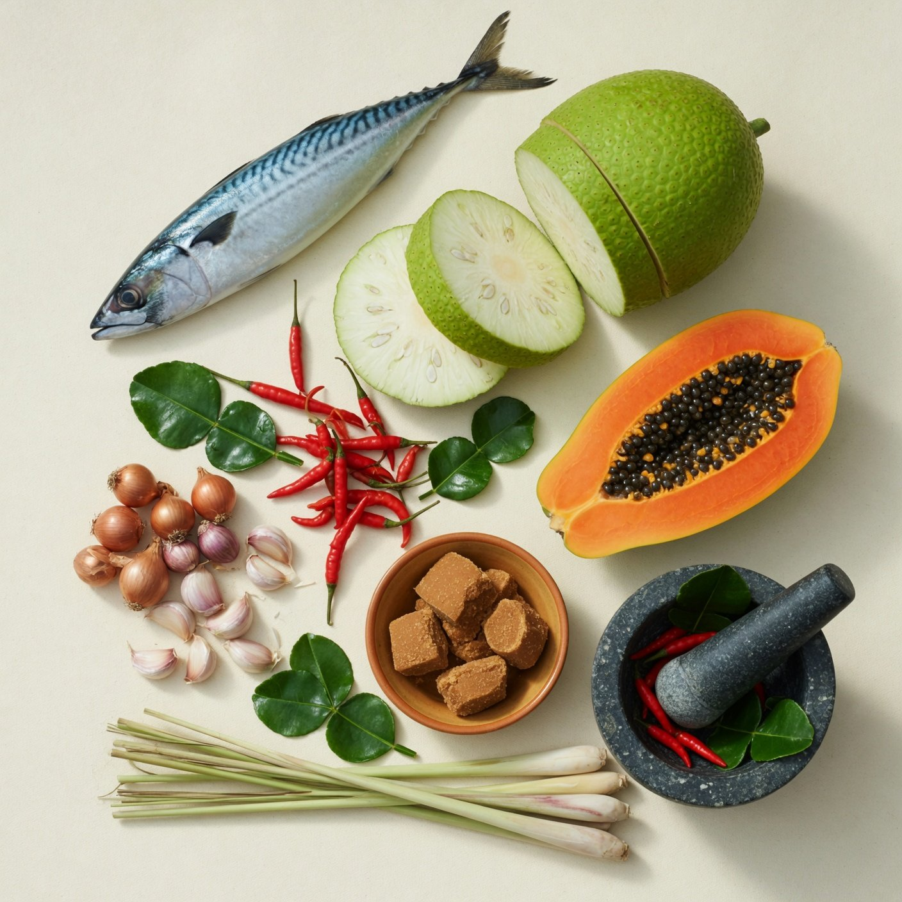
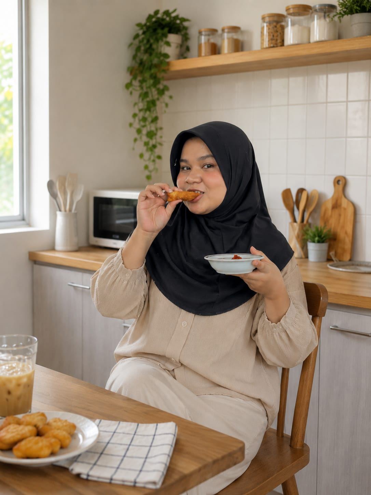

Cita Rasa Dari
Kekayaan Lokal.
Kalesan Sukun Alu hadir dengan perpaduan ikan alu-alu dan sukun dalam sajian praktis yang kaya cita rasa. Disempurnakan dengan saus pepaya asam manis yang segar dan menggugah selera.
Praktis disajikan.
Istimewa dinikmati. Kaya rasa dari kekayaan lokal

Bukan Sekadar Frozen Food.
Satu Produk, Sejuta Rasa.
Setiap gigitan menyatukan gurihnya ikan, lembutnya tekstur, dan segarnya dipping sauce.
 Produk Utama
Produk Utama
Kalesan Sukun Alu
Produk makanan dengan perpaduan ikan alu-alu dan buah sukun yang mengandung tinggi karbohidrat kompleks dan protein yang berkualitas.
Lihat Detail Produk
Kalesan Sukun Alu Matang
Digoreng hingga kecokelatan keemasan. Luar renyah, dalam lembut dan kaya rasa. Cocok dinikmati selagi hangat bersama keluarga.
Pepaya Asam Manis
Garing di luar lembut di dalam
Rasa Lokal, Kualitas Premium.
Cita Rasa Lokal
Resep otentik Indonesia yang memadukan ikan dan sukun dengan saus pepaya yang segar dan khas.
Praktis Disajikan
Dari freezer ke meja makan dalam hitungan menit. Goreng dan kukus.
Bahan Berkualitas
Ikan segar, sukun pilihan, dan bumbu alami. Tanpa pengawet dan tanpa pewarna buatan.
Nikmat Bersama
Sajian yang pas untuk keluarga, teman, atau camilan pribadi di waktu santai.

Dari Bahan Sederhana, Rasa yang Berbeda.
Kami memilih bahan-bahan yang dikenal dekat dengan keseharian masyarakat Indonesia — lalu mengolahnya dengan cara yang baru.
Dari Beku Menjadi Hidangan Favorit.
Proses memasak yang sederhana menyimpan transformasi rasa dan tekstur yang luar biasa.
Kalesan tersimpan rapi dalam freezer, menjaga kesegaran bahan tanpa pengawet.
Dikukus & Digoreng luar menjadi keemasan dan renyah, dalam tetap lembut.
Celupkan ke dalam saus pepaya asam manis pedas untuk pengalaman rasa yang lengkap.

Rasa Rumahan, Kapan Saja.
“Rasanya enak. Renyah di luar, lembut di dalam. Saus pepayanya juara.”Lihat Cerita Lainnya
Tiga Langkah Sederhana.
Tanpa ribet, tanpa persiapan panjang. Siap dinikmati dalam hitungan menit.
Siapkan
Keluarkan Kalesan dari freezer cairkan hingga suhu ruang.
Masak
Kukus dan goreng hingga berwarna keemasan dan matang sempurna.
Nikmati
Sajikan hangat bersama saus pepaya asam manis. Cocok untuk camilan atau lauk utama.
Apa Kata Mereka.
“Anak saya susah makan ikan, tapi Kalesan ini doyan banget. Lembut dan tidak amis. Sausnya bikin nagih!”
“Praktis banget buat anak kos. Tinggal goreng, rasanya kayak masakan rumahan. Stok wajib di kulkas.”
“Walaupun memakai ikan alu-alu tetapi rasanya mirip ikan tenggiri.”
Yang Sering Ditanyakan.
Berapa lama masa simpan Kalesan Sukun Alu? +
Apakah bisa dimasak tanpa digoreng? +
Apakah Kalesan mengandung bahan pengawet? +
Siap Menikmati Rasa Lokal?
Praktis disiapkan. Nikmat dinikmati kapan saja. Pesan sekarang dan rasakan perpaduan rasa yang berbeda.